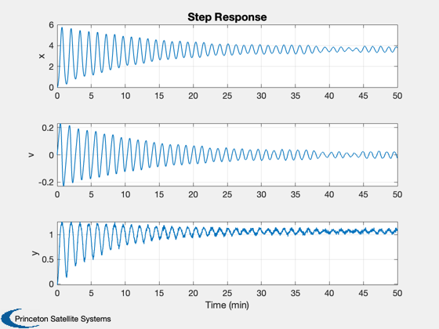

Nonlinear estimator spring simulation.
Has a linear and cubic spring plus a damper. Saves the mat-file KFSim for use by other demos.
------------------------------------------------------------------------ See also: RHSNLSpring, RK4, TimeLabl, Plot2D ------------------------------------------------------------------------
%-------------------------------------------------------------------------- % Copyright (c) 2020 Princeton Satellite Systems, Inc. % All rights reserved. %-------------------------------------------------------------------------- % Since 2020.2 %-------------------------------------------------------------------------- d = RHSNLSpring; f = 0.01; d.c = 2e-3; % Lessen the damping d.kL = 1e-4; % Lower the spring constant d.kC = 2e-4; % Lower the spring constant make it twice the linear spring noiseForce = 1e-3; % 1 sigma acceleration noise noiseMeas = 0.02; % 1 sigma acceleration noise n = 3000; % Number of time steps dT = 1; % Time step, seconds xP = zeros(3,n); x = [0;0]; w = 2; % Baseline for k = 1:n y = atan(x(1)/w) + noiseMeas*randn; xP(:,k) = [x;y]; d.f = f + noiseForce*randn; x = RK4(@RHSNLSpring,x,dT,0,d); end [t,tL] = TimeLabl((0:n-1)*dT); Plot2D(t,xP,tL,{'x' 'v' 'y'},'Step Response') p = FindDirectory('CommonData'); save(fullfile(p,'KFSim'),'xP', 'noiseMeas', 'noiseForce', 'd', 'dT', 'n', 'w'); %-------------------------------------- % $Date$ % $Id: 6387dd9776f8ea558c3307c86d9ea147feee1539 $